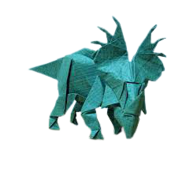
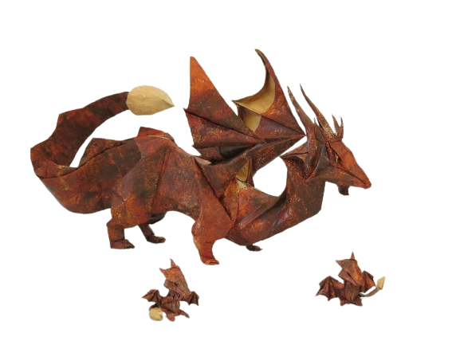

2) HOW TO MAKE A BUTTERFLY
3) HOW TO MAKE A PIGEON

4) HOW TO MAKE A CICADA

5) HOW TO MAKE A DINOSAUR

6) HOW TO MAKE A DRAGON

- Camels can drink plenty of water at a time.
- Camels have thick lips which let them forage for thorny plants other animals can't eat.
- Camels have three sets of eyelids and two rows of eyelashes to keep sand out of their eyes.
- Camels are of two type: One humped or “dromedary” camels and two humped Bactrian camels.
- Butterflies wings are transparent.
- Butterflies only live for a few weeks.
- Butterflies use their feet to taste.
- Butterflies actually have four wings, not two.
- Pigeons are incredibly complex and intelligent animals.
- Pigeons have excellent hearing abilities.
- Pigeons and humans have lived in close proximity for thousands of years.
- Pigeons are fed by many members of different religions.
- Cicadas can survive a huge fall as babies, or nymphs.
- The loud whirring or buzzing sound you hear is an all-male cicada chorus.
- Females Cicadas may be attracted to the sound of motors.
- Most Cicadas have red-orange eyes.
- Dinosaurs may have ended up massive, but they all came from eggs.
- Most dinosaurs had very small brains.
- The dinosaur with the longest name was the Micropachycephalosaurus.
- It has recently been discovered that some dinosaurs even had feathers.
- A dragon can fly.
- A dragon has special powers.
- Some dragons live in caves.
- A dragon can look like a snake with wings, or like lizards.